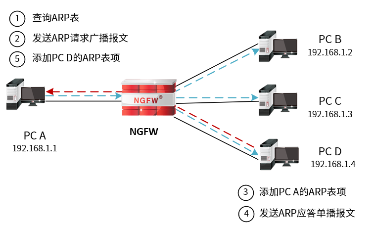
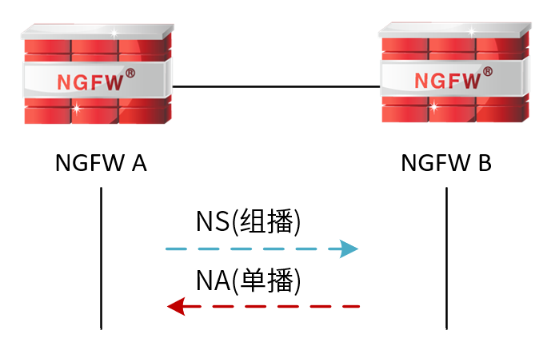

ARP
ARP（Address Resolution Protocol，地址解析协议）是根据IP地址获取MAC地址的TCP/IP协议。以太网设备在发送数据包前需封装第二层报头（包含MAC地址）和第三层报头（包含IP地址），封装数据包中MAC地址的依据为ARP表。以太网设备封装数据包时通过查询ARP表确定MAC地址。如果ARP表中存在目的IP地址对应的MAC地址，直接封装数据包；否则，则通过ARP协议根据已知目的IP地址解析出IP地址对应的MAC地址，再进行封装数据包。
主机根据ARP协议获取目的IP地址对应的MAC地址时，根据目的地址与主机是否处于同一个网段，处理方式不同（以PC A向PC D发送数据报文为例）。
l目的地址与主机处于同一个子网。
1）PC A在ARP表中查找到PC D表项，直接利用其中的MAC地址对IP报文进行数据帧封装，发送给PC D。
2）PC A在ARP表中未查找到PC D表项，ARP工作过程如下图所示。

ØPC A以广播方式发送一个ARP请求报文。该报文的源IP地址和源MAC地址为PC A的IP地址和MAC地址，目的IP地址为PC D的IP地址、目的MAC地址为全F。
Ø处于同一广播域内的所有设备均可接收到该ARP请求报文，并将自己的IP地址与报文中的目的IP地址比较，若不同则丢弃报文，不做任何应答。
ØPC D发现请求报文中IP地址与自身的IP地址相同，于是将ARP请求报文中的源IP地址和源MAC地址的映射关系存入自己的ARP表中，发送ARP响应报文给PC A。ARP响应报文以单播方式发送，其中包含PC D的MAC地址。
ØPC A收到ARP响应报文后，在ARP表中加入PC D的MAC地址用于后续的报文转发，并将IP报文进行数据帧封装，发送给PC D。
l目的地址与主机处于不同子网
PC A广播ARP请求报文，由网关进行应答，发送ARP响应报文给PC A。PC A则将网关的MAC地址写入对应目的地址的该ARP表项。之后，PC A则会根据网关的MAC对数据进行封装。
ND
IPv6协议扩大了地址空间，使得网络节点只需要知道链路层地址及本地网络的子网前缀，就能够通过无状态或有状态自动配置得到唯一的IPv6地址而成为网络的一部分。同时，IPv6还支持网络节点的移动性。这些功能都是通过邻居发现协议（NDP，Neighbor Discovery Protocol）来实现的，同一个子网内所有主机与路由器之间的交互也都是通过邻居发现协议来实现的。
邻居发现协议是IPv6协议的关键组成部分，协议包括路由器请求（RS，Router Solicitation）、路由器通告（RA，Router Advertisement）、邻居请求（NS，Neighbor Solicitation）、邻居通告（NA，Neighbor Advertisement）和重定向5种类型的IPv6控制信息报文（ICMPv6，Internet Control Management Protocol Version 6），实现了在IPv4中的地址解析协议（ARP）、控制报文协议（ICMP）中的路由器发现协议和重定向协议的所有功能，并具有邻居不可达检测机制。
l路由器请求报文：主机启动后，向路由设备发出路由器请求，路由设备则会以路由器通告报文响应。
l路由器通告报文：路由设备周期性的发布路由器通告报文，或者响应主机的路由器请求，其中包括前缀和一些标志位的信息。
l邻居请求报文：IPv6节点发送邻居请求报文，请求邻居的链路层地址，检查邻居是否可达，也可以验证邻居的地址是否是唯一的。
l邻居通告报文：邻居通告报文是IPv6节点对邻居请求报文的响应，或者IPv6节点在链路层变化时也可以主动发送邻居通告报文。
l重定向报文（Redirect）报文：路由设备通过发送重定向报文，通知链路上报文的发送节点，网络中存在更优的转发数据报文的路由设备。节点接收到重定向报文后，修改本地路由表项，选择最优路径转发。
邻居发现协议由邻居表实现，邻居表记录了主机IPv6地址和MAC地址的映射关系，主要用来完成与IPv4中的地址解析协议（ARP）相同的功能。当NGFW发送数据报文时，会查看邻居表，如果目的IP地址已经在邻居表中，则根据邻居表中该IP地址对应的MAC地址封装数据报文；否则，NGFW需发送组播报文以获取目的主机的MAC地址来封装数据报文。

如上图所示，以NGFW A为例，NGFW A获取NGFW B的MAC地址的邻居地址解析过程如下。
1）NGFW A通过组播方式发送NS消息。其中NS消息的源地址是NGFW A的IPv6地址，目的地址是被请求节点NGFW B的组播地址；除此以外，NS消息中还包含了NGFW A的MAC地址。
2）NGFW B收到NS消息后，判断报文的目的地址是否为自己的IPv6地址对应的被请求设备组播地址。如果是，则NGFW B可以学习到NGFW A的MAC地址，并以单播方式发送NA消息，其中包含了自身的MAC地址。
3）NGFW A收到NGFW B发送的NA消息，获得NGFW B的MAC地址。